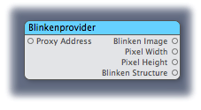
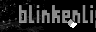
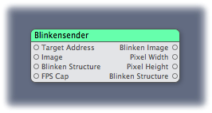
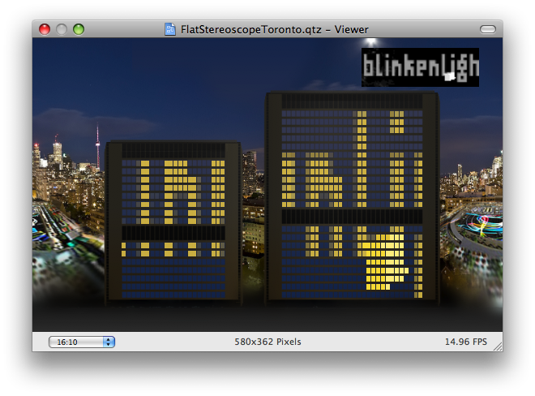
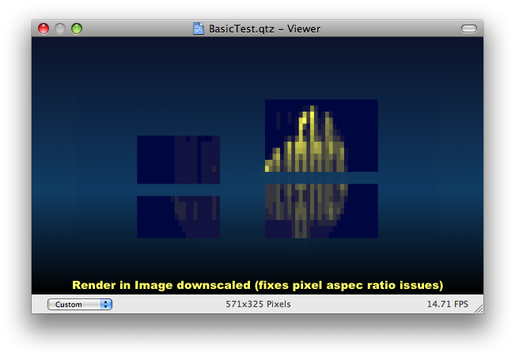

System Requirements
The Blinkenposer.plugin requires Mac OS X 10.5
Installation
For the Blinkenposer packages to work with Quartz Composer, the Blinkenposer.plugin needs to be copied into either (~)/Library/Graphics/Quartz Composer Plug-Ins/.
The FlatStereoscopeToronto.qtz composition can be used as a Screen Saver if put into (~)/Library/Screen Savers/
If you want to create content using Quartz Composer you have to download and install the freely available Apple Developer Tools (Xcode 3.1), after installation Quartz Composer.app can be found in /Developer/Applications/Quartz Composer.app and you are ready to go!
Provided Patches
The Blinkenposer.plugin provides the following patches to be used in Quartz Composer:
Blinkenprovider
The Blinkenprovider patch can listen to blinkenproxies and provides the an Image, the pixel dimensions and a structure representation of the received images.
| Input | Type | Example | Description |
|---|---|---|---|
| Proxy Address | String | localhost:4242 | The address and port of the blinkenproxy to listen to. <address>[:<port>] - if the port is omitted, 4242 is assumed. If the line is comepletely empty, then the Blinkenprovider will try to listen without a proxy. |
| Output | Type | Example | Description |
|---|---|---|---|
| Blinken Image | Image |  | A Grayscale Image representation of what was received from the Blinkenproxy. |
| Pixel Width | Number | 96 | The width of the received Image. |
| Pixel Height | Number | 32 | The Height of the received Image. |
| Blinken Structure | Array of Arrays | {{15,0},{0,15}} | The received Data as a Structure that can be iterated through. This structure has values from 0 (black) to 15 (white). To see that in use you can look into the FlatStereoscopeToronto.qtz Composition. |
Blinkensender
The Blinkensender patch can send images or structures to a blinkenproxy.
| Input | Type | Example | Description |
|---|---|---|---|
| Target Address | String | localhost:2323 | The address and port of the blinkenproxy to Target. <address>[:<port>] - if the port is omitted, 2323 is assumed. |
| Image | Image | A Grayscale Image representation of what should be sent to the Blinkenproxy. The Data will be boiled down to 16 grayscale values. | |
| Blinken tructure | Array of Arrays | {{15,0},{0,15}} | A Blinken Structure to send out. If both Image and Structure are attached to this patch, the Image is taken. To see how that can be created using a javascript patch, have a look into the BasicTest.qtz Composition. |
| FPS Cap | Number | 24 | The max number of frames per second to send out. Please make sure this stays below thirty, because the installation can't display more FPS anyways. |
| Output | Type | Example | Description |
|---|---|---|---|
| Blinken Image | Image | A Grayscale Image representation of what was sent to the Blinkenproxy. | |
| Pixel Width | Number | 96 | The width of the received Image. |
| Pixel Height | Number | 32 | The Height of the received Image. |
| Blinkenstructure | Array of Arrays | {{15,0},{0,15}} | The sent Data as a Structure that can be iterated through. This structure has values from 0 (black) to 15 (white). To see that in use you can look into the FlatStereoscopeToronto.qtz Composition. |
Example Compositions
FlatStereoscopeToronoto.qtz
This plugin is a simple implementation of a toronto blinkensim using the Blinkenprovider patch. It shows the blinken image, and iterates through the structure to display the windows on top of the background image.
BasicText.qtz
This Plugin is a general example how to send data using the Blinkensender patch. All basic variants are demonstrated, if you want to make your own content, please base it on this one, e.g. reuse the Blinkensender and the Test Output Patch.